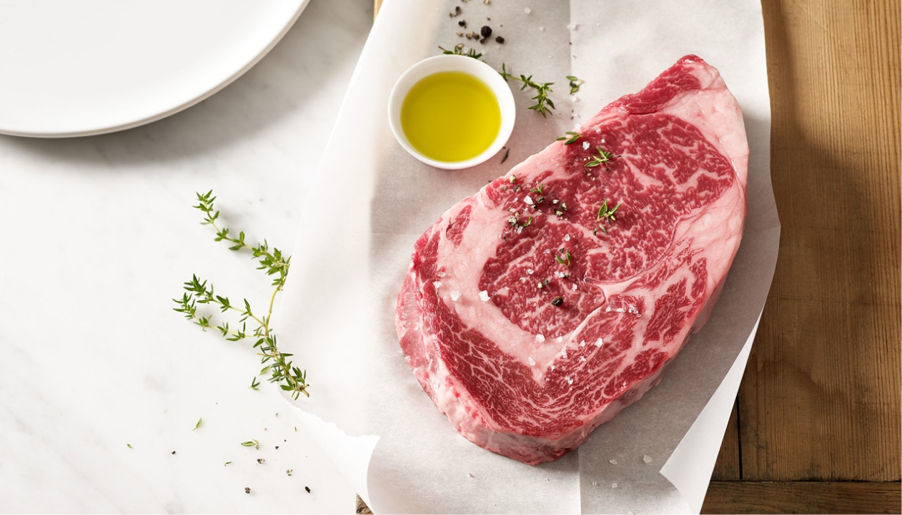
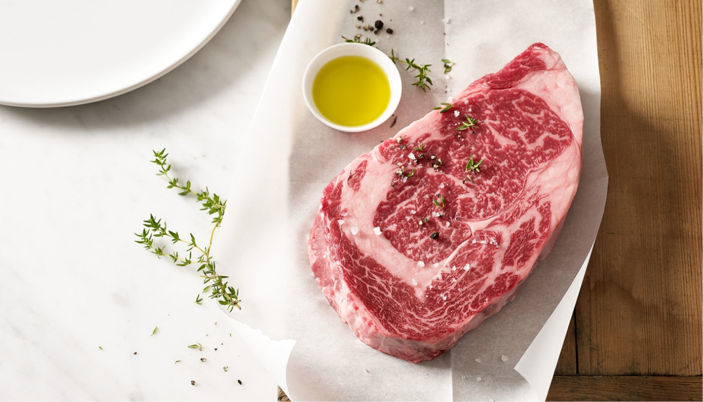

Правила хранения мяса
 

Основные правила:
Правило №1
Хранение в контейнерах
Правило №2
Не замораживать дважды
Правило №3
Специальное отделение
Важно!
*Мясо нужно хранить при температуре ниже 4 градусов Цельсия,
чтобы предотвратить рост бактерий.
Холодильник - наилучшее место для хранения мяса, но важно
знать не только правильную температуру, но и сроки
годности, а также как правильно упаковывать
мясо, чтобы сохранить его свежесть и качество.
Хранение мяса - важный аспект поддержания безопасности
и сохранения свежести продукта. Правильное хранение мяса
в холодильнике и использование контейнеров помогают
избежать развития бактерий и грибков, амтакже сохранить вкус
и питательные свойства продукта. Кроме того, следует учитывать
различные требования к температуре хранения для разных
видов мяса, а также не замораживать мясо дважды. Мы
расскажем о простых правилах, которые помогут научиться
правильно хранить мясо.
Храните мясо в холодильнике
Холодильник — это наилучшее место для хранения мяса, поскольку холод
помогает сохранить свежесть продукта. Но важно помнить,
что различные виды мяса могут требовать разной температуры
хранения. Например, свинина и говядина лучше хранятся
при температуре от 0 до 4 градусов Цельсия, а мясо
птицы — от 0 до 2 градусов Цельсия.
Храните мясо в контейнерах
Для того чтобы мясо сохраняло свою свежесть и немпоглощало
запахи других продуктов в холодильнике, лучше хранить его
в пластиковых контейнерах с крышками. Контейнеры должны
быть плотно закрыты, чтобы мясо не высыхало.
Не используйте бумажные или пластиковые пакеты
для хранения мяса, так как они не обеспечивают
достаточную защиту от бактерий и грибков.
Не замораживайте мясо дважды
Если вы разморозили мясо, но в итоге не успели его
приготовить, не замораживайте его снова. При повторном
замораживании мясо может потерять свои качественные характеристики
и вкус, а также стать источником различных бактерий и
микроорганизмов.
Храните мясо в отдельном отделении холодильника
Для того чтобы мясо не передавало свой запах другим продуктам
в холодильнике, лучше хранить его в отдельном отделении.
Некоторые современные холодильники имеют специальный ящик,
предназначенный для этой цели. Если у вас такой холодильник
нет, можно использовать пластиковый контейнер, который можно
поставить на нижний ящик холодильника.
Не моейте мясо перед хранением
Не рекомендуется мыть мясо перед хранением в холодильнике,
так как это может повысить риск заражения бактериями
и микроорганизмами. Лучше просто вытереть мясо бумажным
полотенцем или кухонной тряпкой.
Храните мясо в вакуумной упаковке
Если у вас есть возможность, лучше всего хранить мясо
в вакуумной упаковке. Такая упаковка позволяет сохранить
свежесть и вкус продукта на дольший период времени. Кроме
того, в вакуумной упаковке мясо занимает меньше места
в холодильнике, что позволяет экономить место.
Соблюдайте правила приготовления
Хранение мяса - это только один из аспектов, который влияет
на его качество и безопасность. Важно также правильно
приготовить мясо перед употреблением. Никогда не употребляйте
недоприготовленное мясо, так как это может привести к различным
заболеваниям.